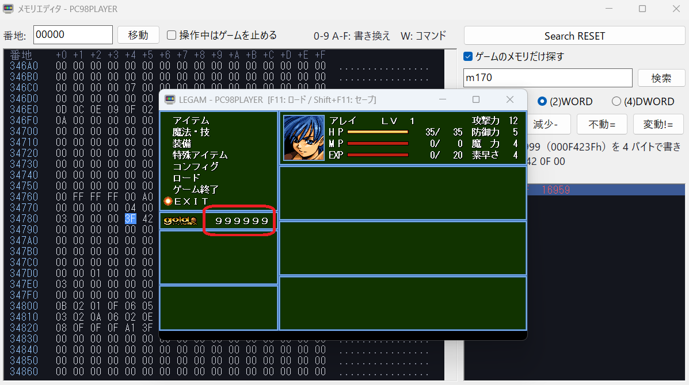
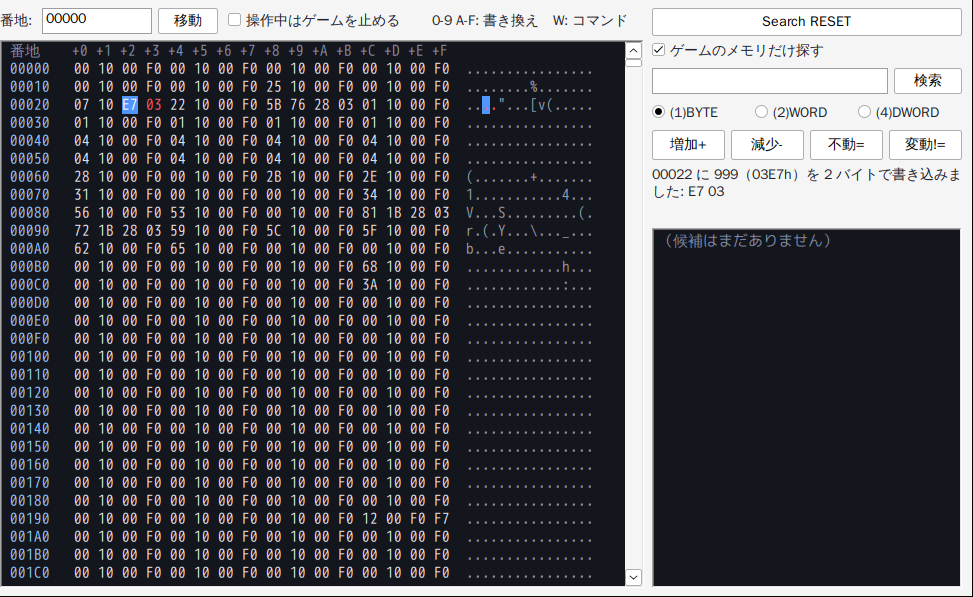
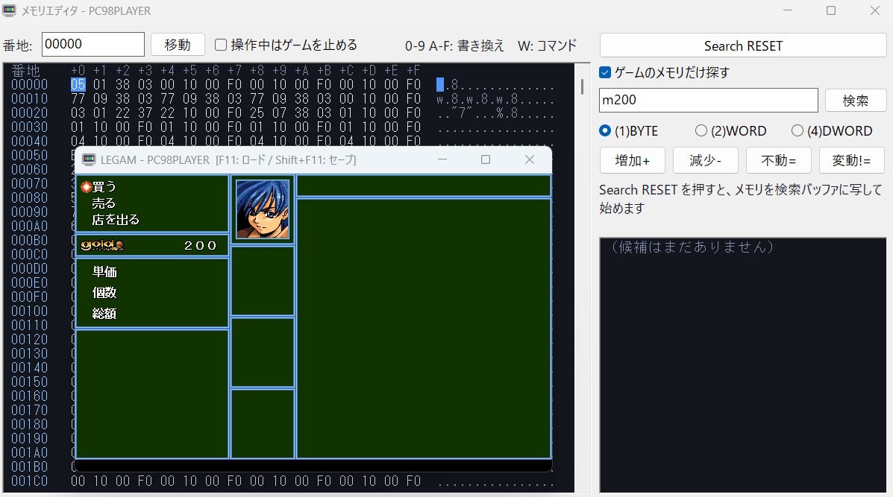
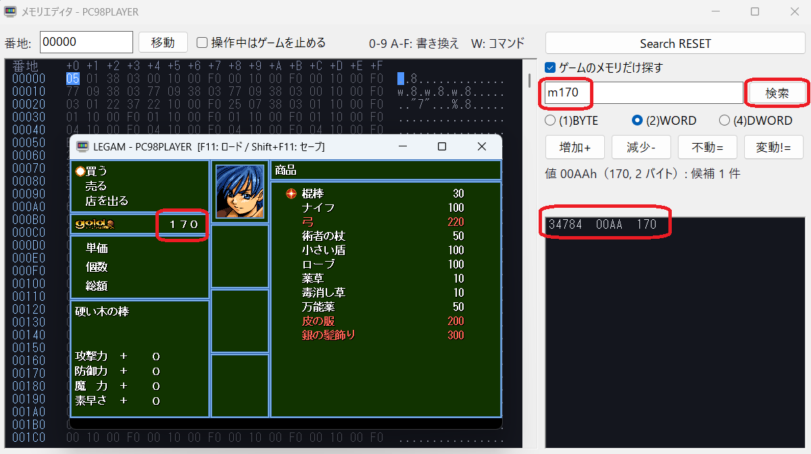
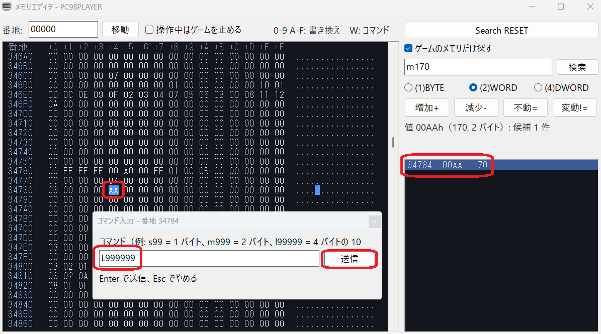
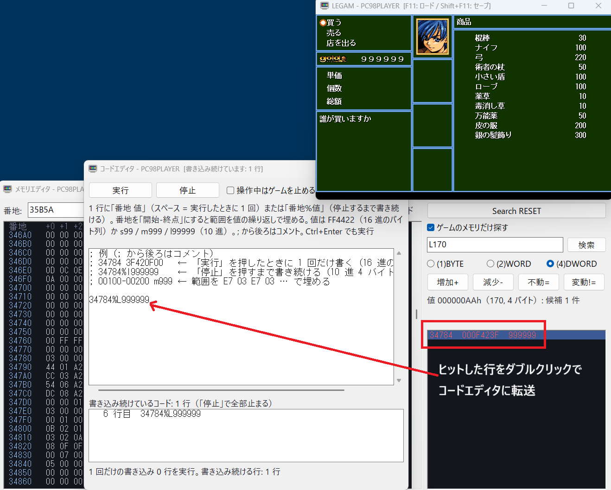

ゲームが動いているメモリを見たり、その場で書き換えたり、値の変化から目当ての番地を絞り込んだりする上級者向けの機能です。

それでは具体的な使い方を説明します。
メモリエディタは、ゲームの窓とは別の窓で開きます。見られるのは通常メモリの 640KB（00000h〜9FFFFh）です。
MemoryEditor=1 と書きます。ゲームの窓の右に並んで開きます。
m999 で 00022h に 999（E7 03）を書き込んだところです。1A2B0 や 1A2B:0000（セグメント:オフセット）と書いて Enter か「移動」で、その番地へ飛びます。上の「操作中はゲームを止める」にチェックを入れると、メモリエディタ（またはコマンド入力の窓）を操作している間、ゲームが一時停止します。 ゲームの窓をクリックして戻ると、続きから動きます。止まっている間は、ゲームの窓のタイトルに「一時停止中: メモリエディタ」と出ます。
値が目まぐるしく変わる場面で落ち着いて番地を調べたいときや、書き換えた値をゲームが使う前に確かめたいときに使います。チェックを外すと、メモリエディタを触っている間もゲームは動き続けます。
MouseLockDisable=2 と書くと、マウスを捕まえずに、カーソルがゲームの画面の上にある間だけゲームへ送るようになり、そのままメモリエディタへカーソルを持っていけます（第一章 1-8）。ダンプでバイトをクリックして選んだ状態で W キーを押すと、コマンド入力の窓が開きます。コマンドを入力して Enter（または「送信」）で、選んだ番地を起点に実行します。Esc でやめます。
| コマンド | はたらき | 例 |
|---|---|---|
| 16 進のバイト列 | 2 桁で 1 バイトとして、選んだ番地から順に書き込みます（何バイトでも）。 | FF442299550044 → FF 44 22 99 55 00 44 |
s＋10 進 | 1 バイトの値を書き込みます（0〜255）。 | s99 → 63 |
m＋10 進 | 2 バイトの値を書き込みます（0〜65535）。下位バイトが先です。 | m999 → E7 03 |
l＋10 進 | 4 バイトの値を書き込みます（0〜4294967295）。 | l99999999 → FF E0 F5 05 |
範囲を選んでいるときは、値を範囲の始めから終わり（両端を含む）まで繰り返して埋めます。例: 00100〜00200 を選んで m999 → 00100 から E7 03 E7 03 E7 03 …。
16 進のバイト列（FF4422 など）も同じく繰り返します。範囲の長さが値の長さで割り切れないときは、最後の 1 回は範囲に入るところまで書きます。
S・M・L の大文字でも構いません。書き込んだ番地・値・バイト列は右の欄に表示されます。範囲がその桁に入らないときや、640KB の終わりを越えるときは書き込みません。
| 操作 | はたらき |
|---|---|
| Search RESET | 640KB をまるごと検索バッファに写し、すべての番地を候補にします。ここから絞り込みを始めます。 |
| ゲームのメモリだけ探す（既定でオン） | オンのまま Search RESET を押すと、今動いているゲームのメモリだけを候補にします。
具体的には、実行中のプログラムと、それを起動した親（ローダや起動用のプログラム）が持っているメモリブロックです。割込みベクタ・BIOS と DOS の作業領域・バッチを動かすシェル・常駐したサウンドドライバやマウスドライバなどは除くので、候補がずっと少なくなります。
対象のプログラム名と大きさは、Search RESET の後に表示されます。対象外の部分はダンプで暗く表示されます。
対象は Search RESET を押した時点で決まります。ゲームがあとからメモリを確保し直したときや、値が常駐プログラムの中にあって見つからないときは、オフにして 640KB 全体で探してください。 |
| 入力欄 ＋ Enter（または「検索」） | 今のメモリがその値になっている候補だけを残します。
|
| (1)BYTE (2)WORD (4)DWORD | 下の 4 つの比較ボタン（増加+・減少-・不動=・変動!=）で使う大きさ（既定は (1)BYTE）。候補の一覧もこの大きさで値を表示します。 |
| 増加+ | 検索バッファ（前回の内容）より今のメモリの値が大きい候補だけを残します。 |
| 減少- | 検索バッファより今の値が小さい候補だけを残します。 |
| 不動= | 検索バッファと等しい（変わっていない）候補だけを残します。 |
| 変動!= | 検索バッファから変わった候補だけを残します。 |
どの絞り込みの後も、検索バッファは今のメモリで置き換わります。つまり次の比較は「前回の操作からどう変わったか」になります。比べるのは符号なしの数としてです。
右下の一覧には候補の番地・今の値（16 進と 10 進）が出ます。前回から変わったものは赤です。クリックすると左のダンプがその番地へ移り、そのまま 16 進を打てば書き換えられます。ダブルクリックすると、その番地をコードエディタの末尾に書き足します（5-7）。

m170（170 を 2 バイトで）と書いて「検索」を押すと、候補が 34784 の 1 件に絞れました。

m170 で検索。候補は 34784（値 00AAh = 170）の 1 件。L999999（999999 を 4 バイトで）と書いて「送信」を押します。

L999999 を書き込むところ。候補が 1 件まで減らないときは、もう一度買い物（または売却）をして、新しい金額で検索をくり返します。 金額の上限がある（表示が 6 桁までなど）ゲームでは、上限を超える値を書くと表示が乱れたり止まったりすることがあるので、ゲームの中で出てくる範囲の値にしておくのが無難です。
m1500 で Enter → ③ ゲームで買い物をして所持金を減らす → ④ 入力欄に新しい金額（m1200 など）で Enter。
2〜3 回くり返して候補が数件になったら、一覧をクリックしてダンプで値を書き換えます。「この番地にこの値」という書き込み（コード）を何行も書いておき、ボタン 1 つでまとめて書き込む別窓です。メモリエディタで見つけた番地を、次からはコードで書き換えられます。 メモリエディタと同時に開けます。
CodeEditor=1（起動と同時にゲームの窓の下に開きます）。PC98PLAYER.SAV\CODES.TXT に残り、次に開いたときに戻ります（メモ帳で書いても構いません）。1 行に 1 つ、番地 接続記号 値 の順に書きます。; から行末まではコメントです。
| 部分 | 書き方 |
|---|---|
| 番地 | 16 進（34784）、またはセグメント:オフセット（3478:0004）。通常メモリ（00000h〜9FFFFh）の中。開始-終点（ 00100-00200）と書くと、その範囲（両端を含む）を値の繰り返しで埋めます（一括書き込み）。 |
| 接続記号 | 半角スペース … 「実行」を押した瞬間に 1 回だけ書き込みます。 半角 % … 「実行」を押してから「停止」を押すまで、毎フレーム（1/60 秒ごと）書き込み続けます。 |
| 値 | FF4422 のような 16 進のバイト列（2 桁で 1 バイト、番地から順に）、または s99・m999・l99999（10 進の 1・2・4 バイト）。 |
; LEGAM の所持金（図 5-1 の番地） 34784 3F420F00 ; 実行したときに 1 回だけ 999999 にする 34784%l9999 ; 停止するまで 9999 のままにする（所持金は 4 バイトなので l で） 00100-00200 m999 ; 00100〜00200 を E7 03 E7 03 … で埋める 00300-003FF%00 ; 停止するまで 00300〜003FF を 0 にし続ける
メモリエディタの右下の候補の一覧で、行をダブルクリックすると、コードエディタの末尾にその番地と半角スペース（34784 のように）が書き足され、カーソルがその後ろに来ます。
コードエディタが開いていなければ開きます。続けて値を打って Ctrl+Enter で実行できるので、サーチで絞り込みながらコードを書けます。
例: LEGAM の所持金を 999999 のままにする（5-6 の続き）
L170 を検索して、候補が 34784 の 1 件に絞れたところから始めます。34784 が入ります。%L999999 と打ち（スペースを消して 34784%L999999 にしても同じです）、Ctrl+Enter（または「実行」）を押します。34784%L999999 が出て、店で買い物をしても所持金は 999999 のままになります。
%L999999 を足して実行。% の行を消して（または全部消して）「実行」すれば、その書き込みは止まります。読めない行があったときも、書き込み続けていたコードは止まります。